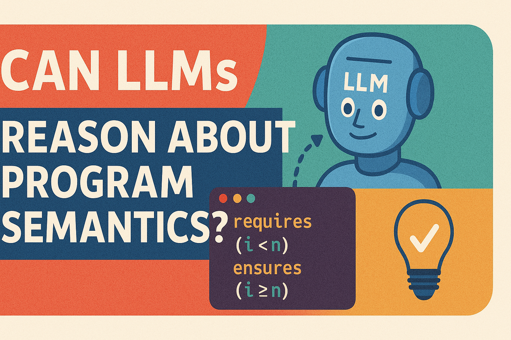

ACL

Can LLMs Reason About Program Semantics? A Comprehensive Evaluation of LLMs on Formal Specification Inference
Thanh Le-Cong, Bach Le, Toby Murray
TL;DR: FormalBench: A dataset for benchmarking LLMs' reasoning on program semantics via formal specification inference
The 63rd Annual Meeting of the Association for Computational Linguistics (ACL 2025),